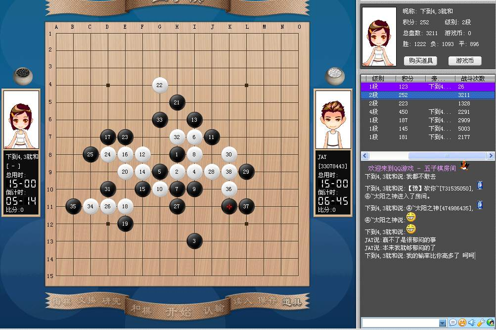

QQ三手真的成这样了么???我很伤心!
#1 QQ三手真的成这样了么???我很伤心! 作者：news 发表时间：2006-11-5 12:34:44
今天上午和一个叫"下到4,3就和"的MM下棋,连输N多盘,
输棋也没什么,老赢还怎么提高呢不是?
但是有个问题,就是,高手也是人,他们也会犯错,也会下随手棋,这话你信么?
尤其在网上,大家没谁会一步棋想几十分钟,出错很难免啊.
可是我发现"下到4,3就和"的这位MM的棋从来没犯过错误,
这让我很奇怪,我并不是说她就一定用软件了或怎么的,
当时我问她:"你为什么下棋都没犯过错呢?"她简单回答,我都下了10000多盘了,
我当时有点晕,我从01年下棋到现在比这数多多了,也会犯一些错的,,,
我有心的把我们下棋的棋谱都存了下来,终于发现了,她的棋竟然和黑石赢法一模一样,
我无语了!
以下是一个棋谱,刚开始有一两步和黑石不一样,不过,她的赢棋思路和石头的一步都不差,
做棋都一样!
h8h9h6i10i6i9g9g8j11i7i8j7k7j6j8l8e6j9l9h11g12i12g10k5j4l4m3l5l6m5n5k3n6m8l7k4k6m6f
她一开始给我的印象很好的,因为我输了后她一直要求和棋,而我就是认输,因为输了不爱和可是当我发现她的棋是那么"黑的时候"我真的,心里很凉,她为了什么??她在做什么?那样有劲么?
我真的很郁闷!!!大家跟我说说,到底是为什么?那样有什么意思?[img]
#2 Re:QQ三手真的成这样了么???我很伤心! 作者：有志青年 发表时间：2006-11-5 12:47:38
昨天南通五子棋活动，也提到网络软件的问题，痞子蔡有这样两句话“用软件有时候就是吸毒”“真的想提高自己的棋手是不会开软件的，最多输了之后复盘时拆解一下”
是的，不要羡慕别人吸完毒之后的飘飘欲仙！
#3 Re:QQ三手真的成这样了么???我很伤心! 作者：lfc80 发表时间：2006-11-8 19:35:25
qq游戏三手早就是黑石的天下，黑石遍地都是！我现在很少到那里下棋了。现在的禁手1也开始玩黑石了！我每天在那里要看到三到四个石头！#4 Re:QQ三手真的成这样了么???我很伤心! 作者：daiyue 发表时间：2006-11-8 21:35:04
纯软的话，还是很好砍的吧。。。#5 Re:QQ三手真的成这样了么???我很伤心! 作者：九命猫 发表时间：2006-11-11 0:19:55
狂晕，我去过几次QQ三手的，被砍惨，还以为那儿是高手云集的地方呢。
#6 Re:QQ三手真的成这样了么???我很伤心! 作者：极地剑客 发表时间：2006-11-12 10:01:31
免费之陪练`不亦乐呼~
#7 Re:QQ三手真的成这样了么???我很伤心! 作者：longfx 发表时间：2006-11-12 11:48:13
纯软并不可怕.加油
#8 Re:QQ三手真的成这样了么???我很伤心! 作者：yidefei 发表时间：2006-11-12 17:14:31
差不多子吧，还是到ＯＲＣ去更好一点了！在那用软就没有那么方便了，呵呵#9 Re:QQ三手真的成这样了么???我很伤心! 作者：longfx 发表时间：2006-11-12 20:38:03
你如果是想提高自己水平,去QQ三手一也一样,就当砍软件了.
ORC并不是全部高手,ORC对局质量在下降.
#10 Re:QQ三手真的成这样了么???我很伤心! 作者：news 发表时间：2006-11-14 11:47:58
楼上几位说的很好，见软件就当练棋了．
我之所以郁闷是因为我输了后她一直要求和棋，我不懂她为了什么？
呵呵．谢谢大家的关心！凡回贴滴朋友都涨棋哈！
#11 Re:QQ三手真的成这样了么???我很伤心! 作者：极地剑客 发表时间：2006-11-17 21:18:53
找高手的话~去国外几个网战下棋好了（不过时间上套不上）#12 Re:QQ三手真的成这样了么???我很伤心! 作者：cjh199 发表时间：2006-11-18 9:37:10
现在的QQ的确变了，很久没去了，严重鄙视！！！
#13 Re:QQ三手真的成这样了么???我很伤心! 作者：无尽 发表时间：2006-11-18 10:54:05
总的来说都没有什么好下棋的地方了
#14 Re:QQ三手真的成这样了么???我很伤心! 作者：gerbo 发表时间：2007-2-19 11:14:47
哎~~我在QQ三手里就是菜鸟，基本跟2D的下，但他们好象就是高我一截样的，郁闷，都是差不多的分数，为什么每次输的都是我啊
#15 Re:QQ三手真的成这样了么???我很伤心! 作者：不拽 发表时间：2007-3-7 1:50:39
我也支持 不管是软还是什么~~和软、下还有个好 就是你不用等太长时间~~
#16 Re:QQ三手真的成这样了么???我很伤心! 作者：yuelee 发表时间：2007-3-10 9:31:51
网上下棋碰到软很正常的。
软件只是工具，是人操纵工具还是工具操纵人，就看各人的看法和水平了。
#17 Re:QQ三手真的成这样了么???我很伤心! 作者：xiaobu 发表时间：2007-3-19 13:00:30
我也和那个mm下过，她上次在练妖刀。
我不知道她有没用黑石，不过她的目的应该是找高手。她说：“能下赢她，说明你是高手。”
#18 Re:QQ三手真的成这样了么???我很伤心! 作者：悠悠陌上 发表时间：2007-3-19 17:04:45
同意练习.严重练习.#19 Re:QQ三手真的成这样了么???我很伤心! 作者：木月 发表时间：2007-3-22 21:33:48
其实楼主真的很无聊啊，人家一个MM有点虚荣心用点软件也没什么，你就指名道姓的给人家发的论坛来^_^鄙视中
#20 Re:QQ三手真的成这样了么???我很伤心! 作者：astro 发表时间：2007-3-26 21:54:39
orc的高手比QQ多……
安全点
#21 Re:QQ三手真的成这样了么???我很伤心! 作者：news 发表时间：2007-4-4 11:18:17
木月大师说的有一定道理.
不过我这个人一向很喜欢追求一个"实在"
从新闻观点观点那里你应该可以看到. 而且你不是MM,也用软件这又是什么道理? 你说的虚荣心是在说你自己吧?
#22 Re:QQ三手真的成这样了么???我很伤心! 作者：木月 发表时间：2007-4-4 13:01:30
用软件就不是“实在”了,你所谓的“实在”是什么,人都是有虚荣心，我也有，咋拉，劳资就是虚荣

#23 Re:QQ三手真的成这样了么???我很伤心! 作者：聪明有余 发表时间：2007-4-10 11:29:50
用blackstone下了10000多盘也是很nb了。
我一般是想棋想不出来的时候 就用bs帮我想一步 嘿嘿
#24 Re:QQ三手真的成这样了么???我很伤心! 作者：逆刃 发表时间：2007-4-15 16:56:35
软件这种东西会让人产生依赖性，就像志引用的痞子蔡的话说像是吸毒。下棋真正要提高水平还得自己多下多思考。有一段时间我也用过软件，当然也并不是纯粹的依靠它，黑石和慢，其它好点的软件都很慢，我只有在关键时候用它来算算VCT，VCF。然而一段时间下来我发现自己的水平不如以前了，思考的深度也明显下降，有时候甚至不愿去想。现在我已经没用它很久了，我的一些小徒弟们问我要分我介绍软件给他们，我会跟他们说用的时候就纯粹的用别想，就当是在抢分了，但分高了你就别用了知道吗，下棋关键还是得靠自己。我也同样发现在QQ上有很多人在用软件，很容易能看出来，黑石的分析方式和做棋都是有矩可寻的。但话说回来，不用去关别人，自己明白就好了！#25 Re:QQ三手真的成这样了么???我很伤心! 作者：咋办啊我 发表时间：2007-4-20 14:28:07
好好学棋,把软件砍成豆腐渣#26 Re:QQ三手真的成这样了么???我很伤心! 作者：gerbo 发表时间：2007-4-22 23:52:29
我要问你下棋为什么？是娱乐还是提高技术，还是两者兼有？如果是提供技术，我觉得让他们开吧，反正我们也不掉一块肉，就当陪练好了，在这样的环境中比较容易磨练自己：如果是娱乐，换个地方，不要在那自寻烦恼；两者兼有，那随自己的心情了，既然改变不了现实改变下自己好了．
我一般在娱乐就在面对面游戏，磨练自己就去三手，刚去（这一个月以来）的时候就被砍了Ｎ次，那个郁闷劲哈，动不动就看见好几百分的，比我多了几倍了，但那又怎么样，输就输咯，昨天跟屏蔽下棋心里比较恐惧，但一样也砍了一盘（当然知道他来这只是好玩，＂全国赛的时候要跟高飞好好干上一场＂）虽然我很菜，但希望能遇见比我高的对手，即使输了也是学习中哈，不怕不怕～！！
文章当中下划线略有改动
#27 Re:QQ三手真的成这样了么???我很伤心! 作者：许相公 发表时间：2007-5-7 20:22:21
五子棋不是软件在比拼
#28 Re:QQ三手真的成这样了么???我很伤心! 作者：黄药师 发表时间：2007-5-7 21:21:47
谁能告诉我，软件怎么使用的？
#29 Re:QQ三手真的成这样了么???我很伤心! 作者：江南新绿 发表时间：2007-5-7 22:07:26
去qq学啊。有些mm很拿手的。
#30 Re:QQ三手真的成这样了么???我很伤心! 作者：news 发表时间：2007-6-5 16:57:01
这是这位“就和”MM今天下的一盘棋。我有幸看了一下
大家可以自己开BLACKSTONE算一下。除了前面几手不和软件不一样外，其它基本都一样
可怜她的对家JAY辛辛苦苦的一手一手的算啊~~
#31 Re:QQ三手真的成这样了么???我很伤心! 作者：月明竹青曲悠 发表时间：2007-6-5 17:34:09
强烈鄙视用软件的下流痞子！#32 Re:QQ三手真的成这样了么???我很伤心! 作者：长笑 发表时间：2007-6-5 19:05:29
是啊.就象有志青年说的,不要羡慕别人吸完毒之后的飘飘欲仙！对这篇文,我有同感...
#33 Re:QQ三手真的成这样了么???我很伤心! 作者：笨蛋020 发表时间：2007-6-25 23:01:29
那个mm被我狂砍了N次，#34 Re:QQ三手真的成这样了么???我很伤心! 作者：笨蛋020 发表时间：2007-6-25 23:09:04
用黑石必败谱就可以了